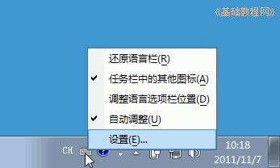
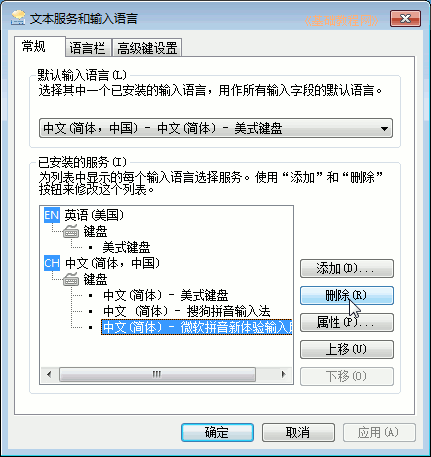
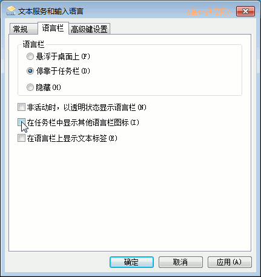
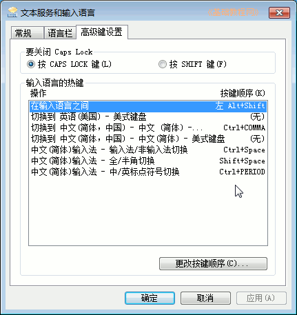
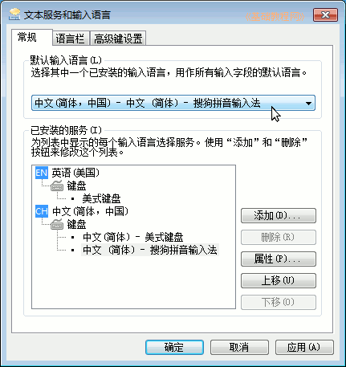

Windows7 基础入门教程
作者：TeliuTe 来源：基础教程网
十八、设置输入法 返回目录 下一课我们可以把不常用的输入法删除，一开机就直接打开汉字输入法；
1、设置输入法
1）在桌面右下角任务栏处，瞄准小键盘点右键，选择下边的“设置”菜单，
点“调整语言栏的位置”可以重新排列这里的图标；

2）在出来的面板中，选择不常用的输入法(比如微软拼音)，然后点右边的“删除”按钮，
点“应用”后就可以删除，这只是从面板中删除，以后还可以点“添加”再找回来；

3）点上边的“语言栏”标签，去掉“在任务栏中显示其他语言栏图标”，这样托盘那儿可以减少一些图标；

4）点“高级键设置”，可以查看一下各种快捷键，比如中英文切换的 Ctrl+空格键，全角标点的 Shift+空格键等等；

5）在第一个“常规”标签上边，选择一个汉语输入法，开机直接就会打开它；

本节学习了设置输入法的基础知识，如果你成功地完成了练习，请继续学习下一课内容；
本教程由86团学校TeliuTe制作|著作权所有
基础教程网：>http://teliute.org/
美丽的校园……
转载和引用本站内容，请保留版权信息和本站链接。